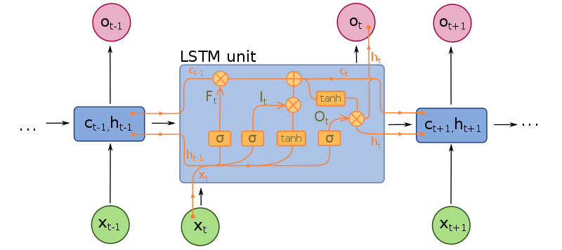
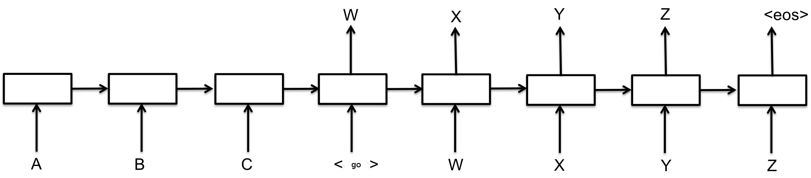
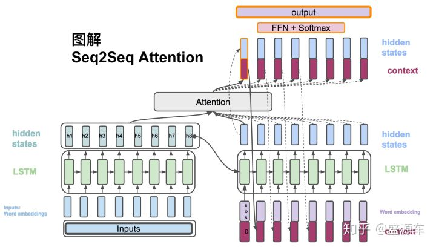

Reinforcement learning notes
Table of contents
basic
Markov Decision Process (MDP)

environment, state, observation, reward, action, agent
Policy
State-value function
where $r_t$ is the reward at step $t$, $\gamma\in[0,1]$ is the discount-rate.
Value function
Action value function
method classification
- model-based: previous observation predict following rewards and observations
- model-free: train it by intuition
- police-based: directly approximating the policy of the agent
- value-based: the agent calculates the value of every possible action
- off police: the ability of the method to learn on old historical data (obtained
- on police: requires fresh data obtained from the environment
Police-based method
just like a classification problem
- NN input: observation
- NN output: distribution of actions
- agent: random choose action base on distribution of actions(police)
cross-entropy method
steps:
- Play N number of episodes using our current model and environment.
- Calculate the total reward for every episode and decide on a reward boundary. Usually, we use some percentile of all rewards, such as 50th or 70th.
- Throw away all episodes with a reward below the boundary.
- Train on the remaining “elite” episodes using observations as the input and issued actions as the desired output.
- Repeat from step 1 until we become satisfied with the result.
use cross-entropy loss function as loss function
drawback: Cross-entropy methods have difficult to understand which step or which state is good and which is not good, it just know overall this episode is better or not
tabular learning
Why using Q but not V?
if I know the value of current state, I know the state is good or not, but I don’t know how to choose next action, even I know the V of all next state, I can not directly know which action i need to do, so we decide action base on Q.
if I know Q of all available action, we just choose the action which has max Q, then this action surely has max V according the definition of V(the relationship of Q and V).
The value iteration in the Env with a loop
If there is no $\gamma (\gamma = 1)$ and the environment has a loop, the value of state will be infinite.
problems in Q-learning
- state is not discrete
- state space is is very large
-
don’t know probability of action and reward matrix (P(s’,r s,a)).
Value iteration
Reward table
- index: “source state” + “action” + “target state”
- value: reward
Transition table
- index: “state” + “action”
- value: index: state value: counts
Value table
- index: state
- value: value of state
Steps
-
random action to build reward and transitions table
-
perform a value iteration loop over all state
-
play several full episodes to choose the best action using the updated value table, at the same time, update reward and transitions table using new data.
**Problems of separating training and testing **: When using the previous steps, you actually separate training and testing, it may has another problem, since the task may be difficult,using random action is hard to reach the final state, so you may lack some states which are near the final step. So, maybe you should conduct training and testing at the same time, and add some exploit into testing.
Q-learning
Different to value iteration,Q-learn change the value table to Q value table:
Q value table
- index: “state” + “action”
- value: action value(Q)
Here :
deep q-learning
DQN:
input: state
output: all action(n actions) value of input state
classification: off policy, value based and model free
problems:
- how to balance explore&exploit
- data is not independent and identically distributed(i.i.d), which is required for neural network training.
- may partially observable MDPs (POMDP)
Basic tricks in Deepmind 2015 paper:
- $\epsilon$-greedy to deal with explore&exploit
- replay buffer and target network to deal with i.i.d,
- replay buffer make it more random, it random select experience in a replay buffer
- target network isolated the influence of nearby Q during training
- several observations as a state to deal with POMDP
Double DQN
Idea: Choosing actions for the next state using the trained network but taking values of Q from the target net.
Noisy Networks
Idea: Add a noise to the weights of fully-connected layers of the network and adjust the parameters of this noise during training using back propagation. (to replace $\epsilon$-greedy and improve performance)
Prioritized replay buffer
Idea: This method tries to improve the efficiency of samples in the replay buffer by prioritizing those samples according to the training loss.
Trick: using loss weight to compensated the distribution bias introduced by priorities.
Dueling DQN
Idea: The Q-values Q(s, a) our network is trying to approximate can be divided into quantities: the value of the state V(s) and the advantage of actions in this state A(s, a).
Trick: the mean value of the advantage of any state to be zero.
Categorical DQN
Idea: Train the probability distribution of action Q-value rather than the action Q-value
Tricks:
-
using generic parametric distribution that is basically a fixed amount of values placed regularly on a values range. every fixed amount of values range calls atom.
-
use loss Kullback- Leibler (KL)-divergence
policy gradients
REINFORCE
idea
Policy Gradient loss formula Increase the probability of actions that have given us good total reward and decrease the probability of actions with bad final outcomes. {split}
problems:
- one training need full episodes since require Q from finished episode
-
High gradients variance, long steps episode have larger Q than short one
- converge to some locally-optimal policy since lack of exploration
- not i.i.d. Correlation between samples
basic tricks
- learning Q(Actor-Critic)
- subtracting a value called baseline from the Q to avoid high gradients variance
- in order to prevent our agent from being stuck in the local minimum, subtracting the entropy from the loss function, punishing the agent for being too certain about the action to take.
- parallel environments to reduce correlation, steps from different environments.
Actor- Critic
Using equation \ref{Q_update} to train V(s) (Critic) and equation \ref{pg_update} to train policy. We call A(s,a) as advantage, so it is advantage Actor- Critic (A2C).
Idea: The scale of our gradient will be just advantage A(s, a), we use another neural network, which will approximate V(s) for every observation.
Implementation
In practice, policy and value networks partially overlap, mostly due to the efficiency and convergence considerations. In this case, policy and value are implemented as different heads of the network, taking the output from the common body and transforming it into the probability distribution and a single number representing the value of the state. This helps both networks to share low-level features, but combine them in a different way.
Tricks
-
add entropy bonus to loss function
the loss function of entropy has a minimum when probability distribution is uniform, so by adding it to the loss function, we’re pushing our agent away from being too certain about its actions.
-
using several environments to improve stability
-
gradient clipping to prevents our gradients at optimization stage from becoming too large and pushing our policy too far.
Total Loss function
Finally, our loss is the sum of PG, value and entropy loss
Asynchronous Advantage Actor-Critic(A3C)
Just using parallel envs to speed up training, there will be some code level tricks to speed up by fully utilizing multiple GPUs and CPUs. For more details, ref some open source implementations on Github.
Deep Reinforcement Learning (Deep RL) in Natural Language Processing (NLP)
Basic concepts in NLP
- Recurrent Neural Networks (RNNs)
- word embeddings
- the seq2seq model
- Recurrent models of visual attention (original paper NIPS 2014)
Ref. CS224d for more about NLP.
RNN
The idea of an RNN is a network with fixed input and output, which is being applied to the sequence of objects and can pass information along this sequence. This information is called hidden state and is normally just a vector of numbers of some size.
Unfold RNN (unfold by time)

RNN produce different output for the same input in different contexts, RNNs can be seen as a standard building block of the systems that need to process variable-length input.
LSTM

Word embedding(word2vec)
Word and phrase embeddings, is the collective name for a set of language modeling and feature learning techniques in natural language processing (NLP) where words or phrases from the vocabulary are mapped to vectors of real numbers. Conceptually it involves a mathematical embedding from a space with one dimension per word to a continuous vector space with a much lower dimension.
Methods to generate this mapping include neural networks, dimensionality reduction on the word co-occurrence matrix, probabilistic models, explainable knowledge base method, and explicit representation in terms of the context in which words appear.
Word embedding is good for NLP tasks such as syntactic parsing and sentiment analysis. Ref word embedding for details.
You can use some pretrained dataset or get it by training your own dataset.
Encoder-Decoder(seq2seq)

use an RNN to process an input sequence and encode this sequence into some fixed-length representation. This RNN is called an encoder. Then you feed the encoded vector into another RNN, called a decoder, which has to produce the resulting sequence. It is widely used in machine translation.
-
teacher-forcing mode: decoder input is the target reference
-
curriculum learning mode: decoder input is the last out put of previous decoder

curriculum learning mode -
attention mechanism
 |
|---|
| seq2seq (picture from Google) |
|  |
| attention mechanism (this picture from zhihu) |
RL in seq2seq
- sampling from probability distribution, instead of learning some average result
- score is not differentiable, we still can use PG to update, use score as scale
- introducing stochasticity into the process of decoding when dataset is limited
- use argmax score as baseline of Q
DDPG
TBC.
Model-based RL
TBC.
nn functions
sigmoid
It transfer a value input to (0,1)
softmax
In short, It transfer K-dimensional vector input to (0,1)
In mathematics, the softmax function, or normalized exponential function, is a generalization of the logistic function that “squashes” a K-dimensional vector z of arbitrary real values to a K-dimensional vector \sigma(z) of real values, where each entry is in the range (0, 1), and all the entries add up to 1.
tanh
It transfer a value input to (-1,1)
relu
Reference
-
Maxim Lapan, Deep Reinforcement Learning Hands-On 2018
- Mnih V, Kavukcuoglu K, Silver D, et al. Human-level control through deep reinforcement learning[J]. Nature, 2015, 518(7540): 529.
- Mnih V, Heess N, Graves A. Recurrent models of visual attention[C]//Advances in neural information processing systems. 2014: 2204-2212.
- Paszke, Adam and Gross, etc. Automatic differentiation in PyTorch, 2017

Comments